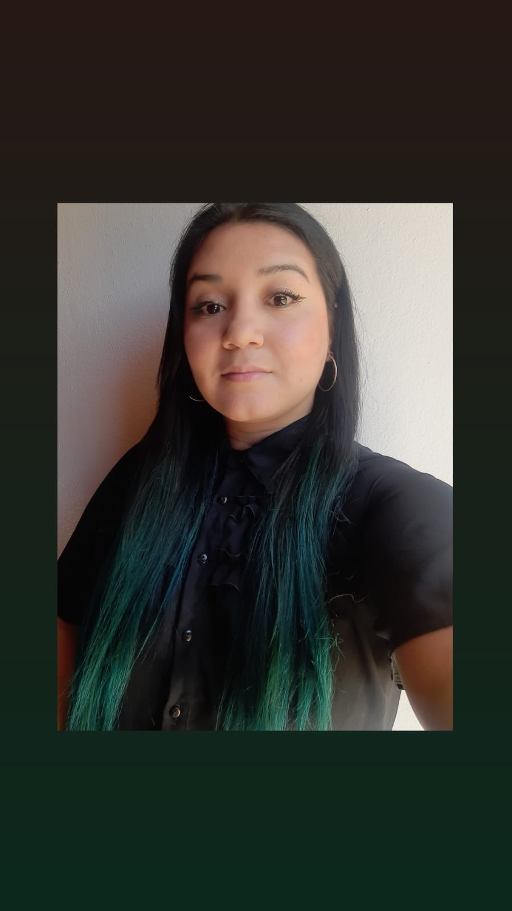

Desarrolladora Trainee
Email: laura.cuenca1@gmail.com
Teléfono: (221) 3631353
Actualmente soy estudiante de la Facultad de Informática de La Plata. Estoy estudiando la Licenciatura en Sistemas y me quedan 3 materias para obtener el título Intermedio como Analista Programador Universitario.
Me mantengo en constante capacitación, he realizado cursos sobre HTML, JavaScript y Python. Actualmente estoy realizando un bootcamp Full Stack en Cilsa.
No poseo experiencia en el rubro de la informática, pero estoy dispuesta a aprender y dar todo de mi lado para poder seguir creciendo y enriquecer mis conocimientos.
En la Universidad aprendí a programar en Java, Python y Pascal. También aprendí a utilizar Excel, Word, Power Point, SQL y GitHub.
En el bootcamp estoy aprendiendo a programar en JavaScript, HTML, CSS, Node.js, React y MongoDB.
Además, estoy aprendiendo a utilizar herramientas como Git, Slack y Discord.
Estoy en constante capacitación y aprendizaje para poder seguir creciendo y adquirir nuevos conocimientos.
En mi cuenta de LinkedIn podrás encontrar mi experiencia laboral y los proyectos que he realizado en la Universidad.
En mi cuenta de GitHub podrás encontrar los proyectos que he realizado en la Universidad y los que estoy realizando en el bootcamp.
Si deseas descargar mi CV, haz clic en el enlace.